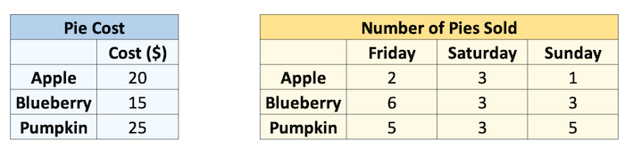
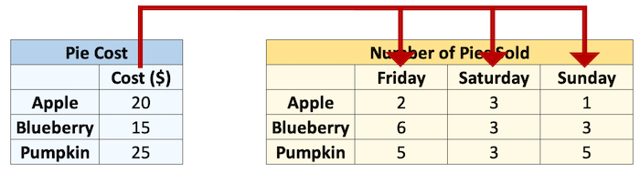
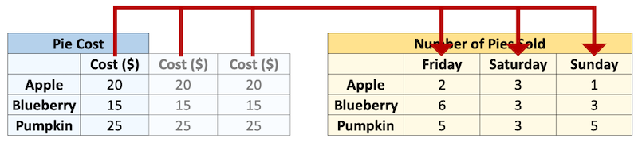
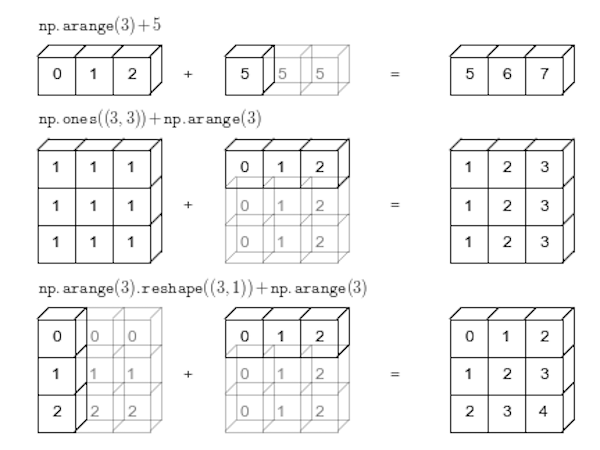

Tutorial 2: Introduction to NumPy and Pandas
Contents
Tutorial 2: Introduction to NumPy and Pandas#
One of the most used packages within our discipline are NumPy and Pandas. This tutorial will focus on teaching you the basics of both of them.
Acknowledgements
This tutorial is heavily based upon the work of others
Tutorial Outline
Learning Objectives#
NumPy
Use NumPy to create arrays with built-in functions inlcuding
np.array(),np.arange(),np.linspace()andnp.full(),np.zeros(),np.ones()Be able to access values from a NumPy array by numeric indexing and slicing and boolean indexing
Perform mathematical operations on and with arrays.
Explain what broadcasting is and how to use it.
Reshape arrays by adding/removing/reshaping axes with
.reshape(),np.newaxis(),.ravel(),.flatten()Understand how to use built-in NumPy functions like
np.sum(),np.mean(),np.log()as stand alone functions or as methods of numpy arrays (when available)
Pandas
Create Pandas series with
pd.Series()and Pandas dataframe withpd.DataFrame()Be able to access values from a Series/DataFrame by indexing, slicing and boolean indexing using notation such as
df[],df.loc[],df.iloc[],df.query[]Perform basic arithmetic operations between two series and anticipate the result.
Describe how Pandas assigns dtypes to Series and what the
objectdtype isRead a standard .csv file from a local path or url using Pandas
pd.read_csv().Explain the relationship and differences between
np.ndarray,pd.Seriesandpd.DataFrameobjects in Python.
1. Introduction to Python Packages#
Packages are an essential building block in programming. Without packages, we’d spend lots of time writing code that’s already been written. Imagine having to write code from scratch every time you wanted to parse a file in a particular format. You’d never get anything done! That’s why we always want to use packages.
To understand Python packages, we’ll briefly need to look at scripts and modules. A script is something you execute in the shell to accomplish a defined task. To write a script, you’d type your code into your favorite text editor and save it with the .py extension. You can then use the python command in a terminal to execute your script.
A module on the other hand is a Python program that you import, either in interactive mode or into your other programs. “Module” is really an umbrella term for reusable code.
A Python package usually consists of several modules. Physically, a package is a folder containing modules and maybe other folders that themselves may contain more folders and modules. Conceptually, it’s a namespace. This simply means that a package’s modules are bound together by a package name, by which they may be referenced.
Importing a package#
We’ll import a package using the import statement:
import <package>
2. Introduction to NumPy#
NumPy stands for “Numerical Python” and it is the standard Python library used for working with arrays (i.e., vectors & matrices), linear algerba, and other numerical computations. NumPy is written in C, making NumPy arrays faster and more memory efficient than Python lists or arrays, read more: (link 1, link 2, link 3).
NumPy can be installed using conda (if not already):
conda install numpy
3. NumPy Arrays#
What are Arrays?#
Arrays are “n-dimensional” data structures that can contain all the basic Python data types, e.g., floats, integers, strings etc, but work best with numeric data. NumPy arrays (“ndarrays”) are homogenous, which means that items in the array should be of the same type. ndarrays are also compatible with numpy’s vast collection of in-built functions!

Source: Medium.com
Usually we import numpy with the alias np (to avoid having to type out n-u-m-p-y every time we want to use it):
import numpy as np
A numpy array is sort of like a list:
my_list = [1, 2, 3, 4, 5]
my_list
[1, 2, 3, 4, 5]
my_array = np.array([1, 2, 3, 4, 5])
my_array
array([1, 2, 3, 4, 5])
But it has the type ndarray:
type(my_array)
numpy.ndarray
Unlike a list, arrays can only hold a single type (usually numbers):
my_list = [1, "hi"]
my_list
[1, 'hi']
my_array = np.array((1, "hi"))
my_array
array(['1', 'hi'], dtype='<U21')
Above: NumPy converted the integer 1 into the string '1'!
Creating arrays#
ndarrays are typically created using two main methods:
From existing data (usually lists or tuples) using
np.array(), like we saw above; or,Using built-in functions such as
np.arange(),np.linspace(),np.zeros(), etc.
my_list = [1, 2, 3]
np.array(my_list)
array([1, 2, 3])
Just like you can have “multi-dimensional lists” (by nesting lists in lists), you can have multi-dimensional arrays (indicated by double square brackets [[ ]]):
list_2d = [[1, 2], [3, 4], [5, 6]]
list_2d
[[1, 2], [3, 4], [5, 6]]
array_2d = np.array(list_2d)
array_2d
array([[1, 2],
[3, 4],
[5, 6]])
You’ll probably use the built-in numpy array creators quite often. Here are some common ones (hint - don’t forget to check the docstrings for help with these functions, if you’re in Jupyter, remeber the shift + tab shortcut):
np.arange(1, 5) # from 1 inclusive to 5 exclusive
array([1, 2, 3, 4])
np.arange(0, 11, 2) # step by 2 from 1 to 11
array([ 0, 2, 4, 6, 8, 10])
np.linspace(0, 10, 5) # 5 equally spaced points between 0 and 10
array([ 0. , 2.5, 5. , 7.5, 10. ])
np.ones((2, 2)) # an array of ones with size 2 x 2
array([[1., 1.],
[1., 1.]])
np.zeros((2, 3)) # an array of zeros with size 2 x 3
array([[0., 0., 0.],
[0., 0., 0.]])
np.full((3, 3), 3.14) # an array of the number 3.14 with size 3 x 3
array([[3.14, 3.14, 3.14],
[3.14, 3.14, 3.14],
[3.14, 3.14, 3.14]])
np.full((3, 3, 3), 3.14) # an array of the number 3.14 with size 3 x 3 x 3
array([[[3.14, 3.14, 3.14],
[3.14, 3.14, 3.14],
[3.14, 3.14, 3.14]],
[[3.14, 3.14, 3.14],
[3.14, 3.14, 3.14],
[3.14, 3.14, 3.14]],
[[3.14, 3.14, 3.14],
[3.14, 3.14, 3.14],
[3.14, 3.14, 3.14]]])
np.random.rand(5, 2) # random numbers uniformly distributed from 0 to 1 with size 5 x 2
array([[0.58836011, 0.44992516],
[0.72040939, 0.36549294],
[0.77243973, 0.45777923],
[0.68639087, 0.2562766 ],
[0.34919183, 0.91555764]])
There are many useful attributes/methods that can be called off numpy arrays:
print(dir(np.ndarray))
['T', '__abs__', '__add__', '__and__', '__array__', '__array_finalize__', '__array_function__', '__array_interface__', '__array_prepare__', '__array_priority__', '__array_struct__', '__array_ufunc__', '__array_wrap__', '__bool__', '__class__', '__class_getitem__', '__complex__', '__contains__', '__copy__', '__deepcopy__', '__delattr__', '__delitem__', '__dir__', '__divmod__', '__dlpack__', '__dlpack_device__', '__doc__', '__eq__', '__float__', '__floordiv__', '__format__', '__ge__', '__getattribute__', '__getitem__', '__gt__', '__hash__', '__iadd__', '__iand__', '__ifloordiv__', '__ilshift__', '__imatmul__', '__imod__', '__imul__', '__index__', '__init__', '__init_subclass__', '__int__', '__invert__', '__ior__', '__ipow__', '__irshift__', '__isub__', '__iter__', '__itruediv__', '__ixor__', '__le__', '__len__', '__lshift__', '__lt__', '__matmul__', '__mod__', '__mul__', '__ne__', '__neg__', '__new__', '__or__', '__pos__', '__pow__', '__radd__', '__rand__', '__rdivmod__', '__reduce__', '__reduce_ex__', '__repr__', '__rfloordiv__', '__rlshift__', '__rmatmul__', '__rmod__', '__rmul__', '__ror__', '__rpow__', '__rrshift__', '__rshift__', '__rsub__', '__rtruediv__', '__rxor__', '__setattr__', '__setitem__', '__setstate__', '__sizeof__', '__str__', '__sub__', '__subclasshook__', '__truediv__', '__xor__', 'all', 'any', 'argmax', 'argmin', 'argpartition', 'argsort', 'astype', 'base', 'byteswap', 'choose', 'clip', 'compress', 'conj', 'conjugate', 'copy', 'ctypes', 'cumprod', 'cumsum', 'data', 'diagonal', 'dot', 'dtype', 'dump', 'dumps', 'fill', 'flags', 'flat', 'flatten', 'getfield', 'imag', 'item', 'itemset', 'itemsize', 'max', 'mean', 'min', 'nbytes', 'ndim', 'newbyteorder', 'nonzero', 'partition', 'prod', 'ptp', 'put', 'ravel', 'real', 'repeat', 'reshape', 'resize', 'round', 'searchsorted', 'setfield', 'setflags', 'shape', 'size', 'sort', 'squeeze', 'std', 'strides', 'sum', 'swapaxes', 'take', 'tobytes', 'tofile', 'tolist', 'tostring', 'trace', 'transpose', 'var', 'view']
x = np.random.rand(5, 2)
x
array([[0.29086934, 0.31629855],
[0.95914168, 0.24616609],
[0.62943863, 0.48160702],
[0.83304242, 0.42805397],
[0.19055127, 0.28561263]])
x.transpose()
array([[0.29086934, 0.95914168, 0.62943863, 0.83304242, 0.19055127],
[0.31629855, 0.24616609, 0.48160702, 0.42805397, 0.28561263]])
x.mean()
0.4660781595029514
x.astype(int)
array([[0, 0],
[0, 0],
[0, 0],
[0, 0],
[0, 0]])
Array Shapes#
As you just saw above, arrays can be of any dimension, shape and size you desire. In fact, there are three main array attributes you need to know to work out the characteristics of an array:
.ndim: the number of dimensions of an array.shape: the number of elements in each dimension (like callinglen()on each dimension).size: the total number of elements in an array (i.e., the product of.shape)
array_1d = np.ones(3)
print(f"Dimensions: {array_1d.ndim}")
print(f" Shape: {array_1d.shape}")
print(f" Size: {array_1d.size}")
Dimensions: 1
Shape: (3,)
Size: 3
Let’s turn that print action into a function and try out some other arrays:
def print_array(x):
print(f"Dimensions: {x.ndim}")
print(f" Shape: {x.shape}")
print(f" Size: {x.size}")
print("")
print(x)
array_2d = np.ones((3, 2))
print_array(array_2d)
Dimensions: 2
Shape: (3, 2)
Size: 6
[[1. 1.]
[1. 1.]
[1. 1.]]
array_4d = np.ones((1, 2, 3, 4))
print_array(array_4d)
Dimensions: 4
Shape: (1, 2, 3, 4)
Size: 24
[[[[1. 1. 1. 1.]
[1. 1. 1. 1.]
[1. 1. 1. 1.]]
[[1. 1. 1. 1.]
[1. 1. 1. 1.]
[1. 1. 1. 1.]]]]
After 3 dimensions, printing arrays starts getting pretty messy. As you can see above, the number of square brackets ([ ]) in the printed output indicate how many dimensions there are: for example, above, the output starts with 4 square brackets [[[[ indicative of a 4D array.
1-d Arrays#
One of the most confusing things about numpy is 1-d arrays (vectors) can have 3 possible shapes!
x = np.ones(5)
print_array(x)
Dimensions: 1
Shape: (5,)
Size: 5
[1. 1. 1. 1. 1.]
y = np.ones((1, 5))
print_array(y)
Dimensions: 2
Shape: (1, 5)
Size: 5
[[1. 1. 1. 1. 1.]]
z = np.ones((5, 1))
print_array(z)
Dimensions: 2
Shape: (5, 1)
Size: 5
[[1.]
[1.]
[1.]
[1.]
[1.]]
We can use np.array_equal() to determine if two arrays have the same shape and elements:
np.array_equal(x, x)
True
np.array_equal(x, y)
False
np.array_equal(x, z)
False
np.array_equal(y, z)
False
The shape of your 1-d arrays can actually have big implications on your mathematical oeprations!
print(f"x: {x}")
print(f"y: {y}")
print(f"z: {z}")
x: [1. 1. 1. 1. 1.]
y: [[1. 1. 1. 1. 1.]]
z: [[1.]
[1.]
[1.]
[1.]
[1.]]
x + y # makes sense
array([[2., 2., 2., 2., 2.]])
y + z # wait, what?
array([[2., 2., 2., 2., 2.],
[2., 2., 2., 2., 2.],
[2., 2., 2., 2., 2.],
[2., 2., 2., 2., 2.],
[2., 2., 2., 2., 2.]])
What happened in the cell above is “broadcasting” and we’ll discuss it below.
4. Array Operations and Broadcasting#
Elementwise operations#
Elementwise operations refer to operations applied to each element of an array or between the paired elements of two arrays.
x = np.ones(4)
x
array([1., 1., 1., 1.])
y = x + 1
y
array([2., 2., 2., 2.])
x - y
array([-1., -1., -1., -1.])
x == y
array([False, False, False, False])
x * y
array([2., 2., 2., 2.])
x ** y
array([1., 1., 1., 1.])
x / y
array([0.5, 0.5, 0.5, 0.5])
np.array_equal(x, y)
False
Broadcasting#
ndarrays with different sizes cannot be directly used in arithmetic operations:
a = np.ones((2, 2))
b = np.ones((3, 3))
a + b
---------------------------------------------------------------------------
ValueError Traceback (most recent call last)
Cell In [45], line 3
1 a = np.ones((2, 2))
2 b = np.ones((3, 3))
----> 3 a + b
ValueError: operands could not be broadcast together with shapes (2,2) (3,3)
Broadcasting describes how NumPy treats arrays with different shapes during arithmetic operations. The idea is to wrangle data so that operations can occur element-wise.
Let’s see an example. Say I sell pies on my weekends. I sell 3 types of pies at different prices, and I sold the following number of each pie last weekend. I want to know how much money I made per pie type per day.
cost = np.array([20, 15, 25])
print("Pie cost:")
print(cost)
sales = np.array([[2, 3, 1], [6, 3, 3], [5, 3, 5]])
print("\nPie sales (#):")
print(sales)
Pie cost:
[20 15 25]
Pie sales (#):
[[2 3 1]
[6 3 3]
[5 3 5]]
How can we multiply these two arrays together? We could use a loop:
total = np.zeros((3, 3)) # initialize an array of 0's
for col in range(sales.shape[1]):
total[:, col] = sales[:, col] * cost
total
array([[ 40., 60., 20.],
[ 90., 45., 45.],
[125., 75., 125.]])
Or we could make them the same size, and multiply corresponding elements “elementwise”:
cost = np.repeat(cost, 3).reshape((3, 3))
cost
array([[20, 20, 20],
[15, 15, 15],
[25, 25, 25]])
cost * sales
array([[ 40, 60, 20],
[ 90, 45, 45],
[125, 75, 125]])
Congratulations! You just broadcasted! Broadcasting is just Numpy eessentially doing the np.repeat() for you under the hood:
cost = np.array([20, 15, 25]).reshape(3, 1)
print(f" cost shape: {cost.shape}")
sales = np.array([[2, 3, 1], [6, 3, 3], [5, 3, 5]])
print(f"sales shape: {sales.shape}")
cost shape: (3, 1)
sales shape: (3, 3)
sales * cost
array([[ 40, 60, 20],
[ 90, 45, 45],
[125, 75, 125]])
In NumPy the smaller array is “broadcast” across the larger array so that they have compatible shapes:
Source: Python Data Science Handbook by Jake VanderPlas (2016)
Why should you care about broadcasting? Well, it’s cleaner and faster than looping and it also affects the array shapes resulting from arithmetic operations. Below, we can time how long it takes to loop vs broadcast:
cost = np.array([20, 15, 25]).reshape(3, 1)
sales = np.array([[2, 3, 1],
[6, 3, 3],
[5, 3, 5]])
total = np.zeros((3, 3))
time_loop = %timeit -q -o -r 3 for col in range(sales.shape[1]): total[:, col] = sales[:, col] * np.squeeze(cost)
time_vec = %timeit -q -o -r 3 cost * sales
print(f"Broadcasting is {time_loop.average / time_vec.average:.2f}x faster than looping here.")
Broadcasting is 5.65x faster than looping here.
Of course, not all arrays are compatible! NumPy compares arrays element-wise. It starts with the trailing dimensions, and works its way forward. Dimensions are compatible if:
they are equal, or
one of them is 1.
Use the code below to test out array compatibitlity:
a = np.ones((3, 2))
b = np.ones((3, 2, 1))
print(f"The shape of a is: {a.shape}")
print(f"The shape of b is: {b.shape}")
print("")
try:
print(f"The shape of a + b is: {(a + b).shape}")
except:
print(f"ERROR: arrays are NOT broadcast compatible!")
The shape of a is: (3, 2)
The shape of b is: (3, 2, 1)
ERROR: arrays are NOT broadcast compatible!
Reshaping Arrays#
There are 3 key reshaping methods I want you to know about for reshaping numpy arrays:
.rehshape()np.newaxis.ravel()/.flatten()
x = np.full((4, 3), 3.14)
x
array([[3.14, 3.14, 3.14],
[3.14, 3.14, 3.14],
[3.14, 3.14, 3.14],
[3.14, 3.14, 3.14]])
You’ll reshape arrays farily often and the .reshape() method is pretty intuitive:
x.reshape(6, 2)
array([[3.14, 3.14],
[3.14, 3.14],
[3.14, 3.14],
[3.14, 3.14],
[3.14, 3.14],
[3.14, 3.14]])
x.reshape(2, -1) # using -1 will calculate the dimension for you (if possible)
array([[3.14, 3.14, 3.14, 3.14, 3.14, 3.14],
[3.14, 3.14, 3.14, 3.14, 3.14, 3.14]])
a = np.ones(3)
print_array(a)
b = np.ones((3, 2))
print_array(b)
Dimensions: 1
Shape: (3,)
Size: 3
[1. 1. 1.]
Dimensions: 2
Shape: (3, 2)
Size: 6
[[1. 1.]
[1. 1.]
[1. 1.]]
If I want to add these two arrays I won’t be able to because their dimensions are not compatible:
a + b
---------------------------------------------------------------------------
ValueError Traceback (most recent call last)
Cell In [58], line 1
----> 1 a + b
ValueError: operands could not be broadcast together with shapes (3,) (3,2)
Sometimes you’ll want to add dimensions to an array for broadcasting purposes like this. We can do that with np.newaxis (note that None is an alias for np.newaxis). We can add a dimension to a to make the arrays compatible:
print_array(a[:, np.newaxis]) # same as a[:, None]
Dimensions: 2
Shape: (3, 1)
Size: 3
[[1.]
[1.]
[1.]]
a[:, np.newaxis] + b
array([[2., 2.],
[2., 2.],
[2., 2.]])
Finally, sometimes you’ll want to “flatten” arrays to a single dimension using .ravel() or .flatten(). .flatten() used to return a copy and .ravel() a view/reference but now they both return a copy so I can’t think of an important reason to use one over the other 🤷♂️
x
array([[3.14, 3.14, 3.14],
[3.14, 3.14, 3.14],
[3.14, 3.14, 3.14],
[3.14, 3.14, 3.14]])
print_array(x.flatten())
Dimensions: 1
Shape: (12,)
Size: 12
[3.14 3.14 3.14 3.14 3.14 3.14 3.14 3.14 3.14 3.14 3.14 3.14]
print_array(x.ravel())
Dimensions: 1
Shape: (12,)
Size: 12
[3.14 3.14 3.14 3.14 3.14 3.14 3.14 3.14 3.14 3.14 3.14 3.14]
5. Indexing and slicing#
Concepts of indexing should be pretty familiar by now. Indexing arrays is similar to indexing lists but there are just more dimensions.
Numeric Indexing#
x = np.arange(10)
x
array([0, 1, 2, 3, 4, 5, 6, 7, 8, 9])
x[3]
3
x[2:]
array([2, 3, 4, 5, 6, 7, 8, 9])
x[:4]
array([0, 1, 2, 3])
x[2:5]
array([2, 3, 4])
x[2:3]
array([2])
x[-1]
9
x[-2]
8
x[5:0:-1]
array([5, 4, 3, 2, 1])
For 2D arrays:
x = np.random.randint(10, size=(4, 6))
x
array([[5, 6, 6, 1, 2, 3],
[1, 8, 4, 9, 0, 7],
[0, 5, 6, 1, 5, 6],
[8, 3, 4, 1, 2, 4]])
x[3, 4] # do this
2
x[3][4] # i do not like this as much
2
x[3]
array([8, 3, 4, 1, 2, 4])
len(x) # generally, just confusing
4
x.shape
(4, 6)
x[:, 2] # column number 2
array([6, 4, 6, 4])
x[2:, :3]
array([[0, 5, 6],
[8, 3, 4]])
x.T
array([[5, 1, 0, 8],
[6, 8, 5, 3],
[6, 4, 6, 4],
[1, 9, 1, 1],
[2, 0, 5, 2],
[3, 7, 6, 4]])
x
array([[5, 6, 6, 1, 2, 3],
[1, 8, 4, 9, 0, 7],
[0, 5, 6, 1, 5, 6],
[8, 3, 4, 1, 2, 4]])
x[1, 1] = 555555
x
array([[ 5, 6, 6, 1, 2, 3],
[ 1, 555555, 4, 9, 0, 7],
[ 0, 5, 6, 1, 5, 6],
[ 8, 3, 4, 1, 2, 4]])
z = np.zeros(5)
z
array([0., 0., 0., 0., 0.])
z[0] = 5
z
array([5., 0., 0., 0., 0.])
Boolean Indexing#
x = np.random.rand(10)
x
array([0.57130207, 0.37735158, 0.22838536, 0.55430824, 0.09293447,
0.93131501, 0.04665138, 0.71615566, 0.36083224, 0.78922467])
x + 1
array([1.57130207, 1.37735158, 1.22838536, 1.55430824, 1.09293447,
1.93131501, 1.04665138, 1.71615566, 1.36083224, 1.78922467])
x_thresh = x > 0.5
x_thresh
array([ True, False, False, True, False, True, False, True, False,
True])
x[x_thresh] = 0.5 # set all elements > 0.5 to be equal to 0.5
x
array([0.5 , 0.37735158, 0.22838536, 0.5 , 0.09293447,
0.5 , 0.04665138, 0.5 , 0.36083224, 0.5 ])
x = np.random.rand(10)
x
array([0.13457581, 0.30125804, 0.80381608, 0.57091273, 0.07493895,
0.00786076, 0.494278 , 0.49414033, 0.81471319, 0.59046749])
x[x > 0.5] = 0.5
x
array([0.13457581, 0.30125804, 0.5 , 0.5 , 0.07493895,
0.00786076, 0.494278 , 0.49414033, 0.5 , 0.5 ])
6. More Useful NumPy Functions#
Numpy has many built-in functions for mathematical operations, really it has almost every numerical operation you might want to do in its library. I’m not going to explore the whole library here, but as an example of some of the available functions, consider working out the hypotenuse of a triangle that with sides 3m and 4m:

sides = np.array([3, 4])
There are several ways we could solve this problem. We could directly use Pythagoras’s Theorem:
$$c = \sqrt{a^2+b^2}$$
np.sqrt(np.sum([np.power(sides[0], 2), np.power(sides[1], 2)]))
5.0
We can leverage the fact that we’re dealing with a numpy array and apply a “vectorized” operation (more on that in a bit) to the whole vector at one time:
(sides ** 2).sum() ** 0.5
5.0
Or we can simply use a numpy built-in function (if it exists):
np.linalg.norm(sides) # you'll learn more about norms in 573
5.0
np.hypot(*sides)
5.0
Vectorization#
Broadly speaking, “vectorization” in NumPy refers to the use of optmized C code to perform an operation. Long-story-short, because numpy arrays are homogenous (contain the same dtype), we don’t need to check that we can perform an operation on elements of a sequence before we do the operation which results in a huge speed-up. You can kind of think of this concept as NumPy being able to perform an operation on the whole array at the same time rather than one-by-one (this is not actually the case, a super-efficient C loop is still running under the hood, but that’s an irrelevant detail). You can read more about vectorization here but all you need to know is that most operations in NumPy are vectorized, so just try to do things at an “array-level” rather than an “element-level”, e.g.:
# DONT DO THIS
array = np.array(range(5))
for i, element in enumerate(array):
array[i] = element ** 2
array
array([ 0, 1, 4, 9, 16])
# DO THIS
array = np.array(range(5))
array **= 2
Let’s do a quick timing experiment:
# loop method
array = np.array(range(5))
time_loop = %timeit -q -o -r 3 for i, element in enumerate(array): array[i] = element ** 2
# vectorized method
array = np.array(range(5))
time_vec = %timeit -q -o -r 3 array ** 2
print(f"Vectorized operation is {time_loop.average / time_vec.average:.2f}x faster than looping here.")
Vectorized operation is 3.67x faster than looping here.

7. Introduction to Pandas#

Pandas is most popular Python library for tabular data structures. You can think of Pandas as an extremely powerful version of Excel (but free and with a lot more features!)
Pandas can be installed using conda:
conda install pandas
We usually import pandas with the alias pd. You’ll see these two imports at the top of most data science workflows:
import pandas as pd
import numpy as np
8. Pandas Series#
What are Series?#
A Series is like a NumPy array but with labels. They are strictly 1-dimensional and can contain any data type (integers, strings, floats, objects, etc), including a mix of them. Series can be created from a scalar, a list, ndarray or dictionary using pd.Series() (note the captial “S”). Here are some example series:

Creating Series#
By default, series are labelled with indices starting from 0. For example:
pd.Series(data = [-5, 1.3, 21, 6, 3])
0 -5.0
1 1.3
2 21.0
3 6.0
4 3.0
dtype: float64
But you can add a custom index:
pd.Series(data = [-5, 1.3, 21, 6, 3],
index = ['a', 'b', 'c', 'd', 'e'])
a -5.0
b 1.3
c 21.0
d 6.0
e 3.0
dtype: float64
You can create a Series from a dictionary:
pd.Series(data = {'a': 10, 'b': 20, 'c': 30})
a 10
b 20
c 30
dtype: int64
Or from an ndarray:
pd.Series(data = np.random.randn(3))
0 -0.224210
1 -0.832307
2 -1.348634
dtype: float64
Or even a scalar:
pd.Series(3.141)
0 3.141
dtype: float64
pd.Series(data=3.141, index=['a', 'b', 'c'])
a 3.141
b 3.141
c 3.141
dtype: float64
Series Characteristics#
Series can be given a name attribute. I almost never use this but it might come up sometimes:
s = pd.Series(data = np.random.randn(5), name='random_series')
s
0 -1.040247
1 -0.460370
2 1.083342
3 0.086908
4 -0.608400
Name: random_series, dtype: float64
s.name
'random_series'
s.rename("another_name")
0 -1.040247
1 -0.460370
2 1.083342
3 0.086908
4 -0.608400
Name: another_name, dtype: float64
You can access the index labels of your series using the .index attribute:
s.index
RangeIndex(start=0, stop=5, step=1)
You can access the underlying data array using .to_numpy():
s.to_numpy()
array([-1.04024687, -0.46037032, 1.08334228, 0.08690784, -0.60839999])
pd.Series([[1, 2, 3], "b", 1]).to_numpy()
array([list([1, 2, 3]), 'b', 1], dtype=object)
Indexing and Slicing Series#
Series are very much like ndarrays (in fact, series can be passed to most NumPy functions!). They can be indexed using square brackets [ ] and sliced using colon : notation:
s = pd.Series(data = range(5),
index = ['A', 'B', 'C', 'D', 'E'])
s
A 0
B 1
C 2
D 3
E 4
dtype: int64
s[0]
0
s[[1, 2, 3]]
B 1
C 2
D 3
dtype: int64
s[0:3]
A 0
B 1
C 2
dtype: int64
Note above how array-based indexing and slicing also returns the series index.
Series are also like dictionaries, in that we can access values using index labels:
s["A"]
0
s[["B", "D", "C"]]
B 1
D 3
C 2
dtype: int64
s["A":"C"]
A 0
B 1
C 2
dtype: int64
"A" in s
True
"Z" in s
False
Series do allow for non-unique indexing, but be careful because indexing operations won’t return unique values:
x = pd.Series(data = range(5),
index = ["A", "A", "A", "B", "C"])
x
A 0
A 1
A 2
B 3
C 4
dtype: int64
x["A"]
A 0
A 1
A 2
dtype: int64
Finally, we can also do boolean indexing with series:
s[s >= 1]
B 1
C 2
D 3
E 4
dtype: int64
s[s > s.mean()]
D 3
E 4
dtype: int64
(s != 1)
A True
B False
C True
D True
E True
dtype: bool
Series Operations#
Unlike ndarrays operations between Series (+, -, /, *) align values based on their LABELS (not their position in the structure). The resulting index will be the sorted union of the two indexes. This gives you the flexibility to run operations on series regardless of their labels.
s1 = pd.Series(data = range(4),
index = ["A", "B", "C", "D"])
s1
A 0
B 1
C 2
D 3
dtype: int64
s2 = pd.Series(data = range(10, 14),
index = ["B", "C", "D", "E"])
s2
B 10
C 11
D 12
E 13
dtype: int64
s1 + s2
A NaN
B 11.0
C 13.0
D 15.0
E NaN
dtype: float64
As you can see above, indices that match will be operated on. Indices that don’t match will appear in the product but with NaN values:

We can also perform standard operations on a series, like multiplying or squaring. NumPy also accepts series as an argument to most functions because series are built off numpy arrays (more on that later):
s1 ** 2
A 0
B 1
C 4
D 9
dtype: int64
np.exp(s1)
A 1.000000
B 2.718282
C 7.389056
D 20.085537
dtype: float64
Finally, just like arrays, series have many built-in methods for various operations. You can find them all by running help(pd.Series):
print([_ for _ in dir(pd.Series) if not _.startswith("_")]) # print all common methods
['T', 'abs', 'add', 'add_prefix', 'add_suffix', 'agg', 'aggregate', 'align', 'all', 'any', 'append', 'apply', 'argmax', 'argmin', 'argsort', 'array', 'asfreq', 'asof', 'astype', 'at', 'at_time', 'attrs', 'autocorr', 'axes', 'backfill', 'between', 'between_time', 'bfill', 'bool', 'cat', 'clip', 'combine', 'combine_first', 'compare', 'convert_dtypes', 'copy', 'corr', 'count', 'cov', 'cummax', 'cummin', 'cumprod', 'cumsum', 'describe', 'diff', 'div', 'divide', 'divmod', 'dot', 'drop', 'drop_duplicates', 'droplevel', 'dropna', 'dt', 'dtype', 'dtypes', 'duplicated', 'empty', 'eq', 'equals', 'ewm', 'expanding', 'explode', 'factorize', 'ffill', 'fillna', 'filter', 'first', 'first_valid_index', 'flags', 'floordiv', 'ge', 'get', 'groupby', 'gt', 'hasnans', 'head', 'hist', 'iat', 'idxmax', 'idxmin', 'iloc', 'index', 'infer_objects', 'info', 'interpolate', 'is_monotonic', 'is_monotonic_decreasing', 'is_monotonic_increasing', 'is_unique', 'isin', 'isna', 'isnull', 'item', 'items', 'iteritems', 'keys', 'kurt', 'kurtosis', 'last', 'last_valid_index', 'le', 'loc', 'lt', 'mad', 'map', 'mask', 'max', 'mean', 'median', 'memory_usage', 'min', 'mod', 'mode', 'mul', 'multiply', 'name', 'nbytes', 'ndim', 'ne', 'nlargest', 'notna', 'notnull', 'nsmallest', 'nunique', 'pad', 'pct_change', 'pipe', 'plot', 'pop', 'pow', 'prod', 'product', 'quantile', 'radd', 'rank', 'ravel', 'rdiv', 'rdivmod', 'reindex', 'reindex_like', 'rename', 'rename_axis', 'reorder_levels', 'repeat', 'replace', 'resample', 'reset_index', 'rfloordiv', 'rmod', 'rmul', 'rolling', 'round', 'rpow', 'rsub', 'rtruediv', 'sample', 'searchsorted', 'sem', 'set_axis', 'set_flags', 'shape', 'shift', 'size', 'skew', 'slice_shift', 'sort_index', 'sort_values', 'sparse', 'squeeze', 'std', 'str', 'sub', 'subtract', 'sum', 'swapaxes', 'swaplevel', 'tail', 'take', 'to_clipboard', 'to_csv', 'to_dict', 'to_excel', 'to_frame', 'to_hdf', 'to_json', 'to_latex', 'to_list', 'to_markdown', 'to_numpy', 'to_period', 'to_pickle', 'to_sql', 'to_string', 'to_timestamp', 'to_xarray', 'tolist', 'transform', 'transpose', 'truediv', 'truncate', 'tshift', 'tz_convert', 'tz_localize', 'unique', 'unstack', 'update', 'value_counts', 'values', 'var', 'view', 'where', 'xs']
s1
A 0
B 1
C 2
D 3
dtype: int64
s1.mean()
1.5
s1.sum()
6
s1.astype(float)
A 0.0
B 1.0
C 2.0
D 3.0
dtype: float64
“Chaining” operations together is also common with pandas:
s1.add(3.141).pow(2).mean().astype(int)
22
Data Types#
Series can hold all the data types (dtypes) you’re used to, e.g., int, float, bool, etc. There are a few other special data types too (object, DateTime and Categorical) which we’ll talk about in this and later chapters. You can always read more about pandas dtypes in the documentation too. For example, here’s a series of dtype int64:
x = pd.Series(range(5))
x.dtype
dtype('int64')
The dtype “object” is used for series of strings or mixed data. Pandas is currently experimenting with a dedicated string dtype StringDtype, but it is still in testing.
x = pd.Series(['A', 'B'])
x
0 A
1 B
dtype: object
x = pd.Series(['A', 1, ["I", "AM", "A", "LIST"]])
x
0 A
1 1
2 [I, AM, A, LIST]
dtype: object
While flexible, it is recommended to avoid the use of object dtypes because of higher memory requirements. Essentially, in an object dtype series, every single element stores information about its individual dtype. We can inspect the dtypes of all the elements in a mixed series in several ways, below I’ll use the map method:
x.map(type)
0 <class 'str'>
1 <class 'int'>
2 <class 'list'>
dtype: object
We can see that each object in our series has a different dtype. This comes at a cost. Compare the memory usage of the series below:
x1 = pd.Series([1, 2, 3])
print(f"x1 dtype: {x1.dtype}")
print(f"x1 memory usage: {x1.memory_usage(deep=True)} bytes")
print("")
x2 = pd.Series([1, 2, "3"])
print(f"x2 dtype: {x2.dtype}")
print(f"x2 memory usage: {x2.memory_usage(deep=True)} bytes")
print("")
x3 = pd.Series([1, 2, "3"]).astype('int8') # coerce the object series to int8
print(f"x3 dtype: {x3.dtype}")
print(f"x3 memory usage: {x3.memory_usage(deep=True)} bytes")
x1 dtype: int64
x1 memory usage: 152 bytes
x2 dtype: object
x2 memory usage: 258 bytes
x3 dtype: int8
x3 memory usage: 131 bytes
In summary, try to use uniform dtypes where possible - they are more memory efficient!
One more gotcha, NaN (frequently used to represent missing values in data) is a float:
type(np.NaN)
float
This can be problematic if you have a series of integers and one missing value, because Pandas will cast the whole series to a float:
pd.Series([1, 2, 3, np.NaN])
0 1.0
1 2.0
2 3.0
3 NaN
dtype: float64
Only recently, Pandas has implemented a “nullable integer dtype”, which can handle NaN in an integer series without affecting the dtype. Note the captial “I” in the type below, differentiating it from numpy’s int64 dtype:
pd.Series([1, 2, 3, np.NaN]).astype('Int64')
0 1
1 2
2 3
3 <NA>
dtype: Int64
This is not the default in Pandas yet and functionality of this new feature is still subject to change.
9. Pandas DataFrames#
What are DataFrames?#
Pandas DataFrames are you’re new best friend. They are like the Excel spreadsheets you may be used to. DataFrames are really just Series stuck together! Think of a DataFrame as a dictionary of series, with the “keys” being the column labels and the “values” being the series data:

Creating DataFrames#
Dataframes can be created using pd.DataFrame() (note the capital “D” and “F”). Like series, index and column labels of dataframes are labelled starting from 0 by default:
pd.DataFrame([[1, 2, 3],
[4, 5, 6],
[7, 8, 9]])
| 0 | 1 | 2 | |
|---|---|---|---|
| 0 | 1 | 2 | 3 |
| 1 | 4 | 5 | 6 |
| 2 | 7 | 8 | 9 |
We can use the index and columns arguments to give them labels:
pd.DataFrame([[1, 2, 3],
[4, 5, 6],
[7, 8, 9]],
index = ["R1", "R2", "R3"],
columns = ["C1", "C2", "C3"])
| C1 | C2 | C3 | |
|---|---|---|---|
| R1 | 1 | 2 | 3 |
| R2 | 4 | 5 | 6 |
| R3 | 7 | 8 | 9 |
There are so many ways to create dataframes. I most often create them from dictionaries or ndarrays:
pd.DataFrame({"C1": [1, 2, 3],
"C2": ['A', 'B', 'C']},
index=["R1", "R2", "R3"])
| C1 | C2 | |
|---|---|---|
| R1 | 1 | A |
| R2 | 2 | B |
| R3 | 3 | C |
pd.DataFrame(np.random.randn(5, 5),
index=[f"row_{_}" for _ in range(1, 6)],
columns=[f"col_{_}" for _ in range(1, 6)])
| col_1 | col_2 | col_3 | col_4 | col_5 | |
|---|---|---|---|---|---|
| row_1 | -1.348926 | -0.854937 | 0.028805 | -1.841026 | -0.382973 |
| row_2 | -1.880592 | 0.045680 | 0.415357 | -0.887536 | -1.239757 |
| row_3 | -1.189034 | 0.454073 | 2.016819 | -1.676161 | -1.713008 |
| row_4 | -1.121293 | -0.499138 | 1.883176 | -0.619705 | -0.062857 |
| row_5 | -1.648772 | -1.667769 | -0.642660 | -0.223483 | 0.833396 |
pd.DataFrame(np.array([['Tom', 7], ['Mike', 15], ['Tiffany', 3]]))
| 0 | 1 | |
|---|---|---|
| 0 | Tom | 7 |
| 1 | Mike | 15 |
| 2 | Tiffany | 3 |
Here’s a table of the main ways you can create dataframes (see the Pandas documentation for more):
Create DataFrame from |
Code |
|---|---|
Lists of lists |
|
ndarray |
|
Dictionary |
|
List of tuples |
|
Series |
|
Indexing and Slicing DataFrames#
There are several main ways to select data from a DataFrame:
[].loc[].iloc[]Boolean indexing
.query()
df = pd.DataFrame({"Name": ["Tom", "Mike", "Tiffany"],
"Language": ["Python", "Python", "R"],
"Courses": [5, 4, 7]})
df
| Name | Language | Courses | |
|---|---|---|---|
| 0 | Tom | Python | 5 |
| 1 | Mike | Python | 4 |
| 2 | Tiffany | R | 7 |
Indexing with []#
Select columns by single labels, lists of labels, or slices:
df['Name'] # returns a series
0 Tom
1 Mike
2 Tiffany
Name: Name, dtype: object
df[['Name']] # returns a dataframe!
| Name | |
|---|---|
| 0 | Tom |
| 1 | Mike |
| 2 | Tiffany |
df[['Name', 'Language']]
| Name | Language | |
|---|---|---|
| 0 | Tom | Python |
| 1 | Mike | Python |
| 2 | Tiffany | R |
You can only index rows by using slices, not single values (but not recommended, see preferred methods below).
df[0] # doesn't work
---------------------------------------------------------------------------
KeyError Traceback (most recent call last)
File /opt/hostedtoolcache/Python/3.8.14/x64/lib/python3.8/site-packages/pandas/core/indexes/base.py:3803, in Index.get_loc(self, key, method, tolerance)
3802 try:
-> 3803 return self._engine.get_loc(casted_key)
3804 except KeyError as err:
File /opt/hostedtoolcache/Python/3.8.14/x64/lib/python3.8/site-packages/pandas/_libs/index.pyx:138, in pandas._libs.index.IndexEngine.get_loc()
File /opt/hostedtoolcache/Python/3.8.14/x64/lib/python3.8/site-packages/pandas/_libs/index.pyx:165, in pandas._libs.index.IndexEngine.get_loc()
File pandas/_libs/hashtable_class_helper.pxi:5745, in pandas._libs.hashtable.PyObjectHashTable.get_item()
File pandas/_libs/hashtable_class_helper.pxi:5753, in pandas._libs.hashtable.PyObjectHashTable.get_item()
KeyError: 0
The above exception was the direct cause of the following exception:
KeyError Traceback (most recent call last)
Cell In [155], line 1
----> 1 df[0] # doesn't work
File /opt/hostedtoolcache/Python/3.8.14/x64/lib/python3.8/site-packages/pandas/core/frame.py:3804, in DataFrame.__getitem__(self, key)
3802 if self.columns.nlevels > 1:
3803 return self._getitem_multilevel(key)
-> 3804 indexer = self.columns.get_loc(key)
3805 if is_integer(indexer):
3806 indexer = [indexer]
File /opt/hostedtoolcache/Python/3.8.14/x64/lib/python3.8/site-packages/pandas/core/indexes/base.py:3805, in Index.get_loc(self, key, method, tolerance)
3803 return self._engine.get_loc(casted_key)
3804 except KeyError as err:
-> 3805 raise KeyError(key) from err
3806 except TypeError:
3807 # If we have a listlike key, _check_indexing_error will raise
3808 # InvalidIndexError. Otherwise we fall through and re-raise
3809 # the TypeError.
3810 self._check_indexing_error(key)
KeyError: 0
df[0:1] # does work
| Name | Language | Courses | |
|---|---|---|---|
| 0 | Tom | Python | 5 |
df[1:] # does work
| Name | Language | Courses | |
|---|---|---|---|
| 1 | Mike | Python | 4 |
| 2 | Tiffany | R | 7 |
Indexing with .loc and .iloc#
Pandas created the methods .loc[] and .iloc[] as more flexible alternatives for accessing data from a dataframe. Use df.iloc[] for indexing with integers and df.loc[] for indexing with labels. These are typically the recommended methods of indexing in Pandas.
df
| Name | Language | Courses | |
|---|---|---|---|
| 0 | Tom | Python | 5 |
| 1 | Mike | Python | 4 |
| 2 | Tiffany | R | 7 |
First we’ll try out .iloc which accepts integers as references to rows/columns:
df.iloc[0] # returns a series
Name Tom
Language Python
Courses 5
Name: 0, dtype: object
df.iloc[0:2] # slicing returns a dataframe
| Name | Language | Courses | |
|---|---|---|---|
| 0 | Tom | Python | 5 |
| 1 | Mike | Python | 4 |
df.iloc[2, 1] # returns the indexed object
'R'
df.iloc[[0, 1], [1, 2]] # returns a dataframe
| Language | Courses | |
|---|---|---|
| 0 | Python | 5 |
| 1 | Python | 4 |
Now let’s look at .loc which accepts labels as references to rows/columns:
df.loc[:, 'Name']
0 Tom
1 Mike
2 Tiffany
Name: Name, dtype: object
df.loc[:, 'Name':'Language']
| Name | Language | |
|---|---|---|
| 0 | Tom | Python |
| 1 | Mike | Python |
| 2 | Tiffany | R |
df.loc[[0, 2], ['Language']]
| Language | |
|---|---|
| 0 | Python |
| 2 | R |
Sometimes we want to use a mix of integers and labels to reference data in a dataframe. The easiest way to do this is to use .loc[] with a label then use an integer in combinations with .index or .columns:
df.index
RangeIndex(start=0, stop=3, step=1)
df.columns
Index(['Name', 'Language', 'Courses'], dtype='object')
df.loc[df.index[0], 'Courses'] # I want to reference the first row and the column named "Courses"
5
df.loc[2, df.columns[1]] # I want to reference row "2" and the second column
'R'
Boolean indexing#
Just like with series, we can select data based on boolean masks:
df
| Name | Language | Courses | |
|---|---|---|---|
| 0 | Tom | Python | 5 |
| 1 | Mike | Python | 4 |
| 2 | Tiffany | R | 7 |
df[df['Courses'] > 5]
| Name | Language | Courses | |
|---|---|---|---|
| 2 | Tiffany | R | 7 |
df[df['Name'] == "Tom"]
| Name | Language | Courses | |
|---|---|---|---|
| 0 | Tom | Python | 5 |
Indexing with .query()#
Boolean masks work fine, but I prefer to use the .query() method for selecting data. df.query() is a powerful tool for filtering data. It has an odd syntax, one of the strangest I’ve seen in Python, it is more like SQL - df.query() accepts a string expression to evaluate and it “knows” the names of the columns in your dataframe.
df.query("Courses > 4 & Language == 'Python'")
| Name | Language | Courses | |
|---|---|---|---|
| 0 | Tom | Python | 5 |
Note the use of single quotes AND double quotes above, lucky we have both in Python! Compare this to the equivalent boolean indexing operation and you can see that .query() is much more readable, especially as the query gets bigger!
df[(df['Courses'] > 4) & (df['Language'] == 'Python')]
| Name | Language | Courses | |
|---|---|---|---|
| 0 | Tom | Python | 5 |
Query also allows you to reference variable in the current workspace using the @ symbol:
course_threshold = 4
df.query("Courses > @course_threshold")
| Name | Language | Courses | |
|---|---|---|---|
| 0 | Tom | Python | 5 |
| 2 | Tiffany | R | 7 |
Indexing cheatsheet#
Method |
Syntax |
Output |
|---|---|---|
Select column |
|
Series |
Select row slice |
|
DataFrame |
Select row/column by label |
|
Object for single selection, Series for one row/column, otherwise DataFrame |
Select row/column by integer |
|
Object for single selection, Series for one row/column, otherwise DataFrame |
Select by row integer & column label |
|
Object for single selection, Series for one row/column, otherwise DataFrame |
Select by row label & column integer |
|
Object for single selection, Series for one row/column, otherwise DataFrame |
Select by boolean |
|
Object for single selection, Series for one row/column, otherwise DataFrame |
Select by boolean expression |
|
Object for single selection, Series for one row/column, otherwise DataFrame |
Reading/Writing Data From External Sources#
.csv files#
A lot of the time you will be loading .csv files for use in pandas. You can use the pd.read_csv() function for this. In the following chapters we’ll use a real dataset of my cycling commutes to the University of British Columbia. There are so many arguments that can be used to help read in your .csv file in an efficient and appropriate manner, feel free to check them out now (by using shift + tab in Jupyter, or typing help(pd.read_csv)).
path = 'data/cycling_data.csv'
df = pd.read_csv(path, index_col=0, parse_dates=True)
df
---------------------------------------------------------------------------
FileNotFoundError Traceback (most recent call last)
Cell In [176], line 2
1 path = 'data/cycling_data.csv'
----> 2 df = pd.read_csv(path, index_col=0, parse_dates=True)
3 df
File /opt/hostedtoolcache/Python/3.8.14/x64/lib/python3.8/site-packages/pandas/util/_decorators.py:211, in deprecate_kwarg.<locals>._deprecate_kwarg.<locals>.wrapper(*args, **kwargs)
209 else:
210 kwargs[new_arg_name] = new_arg_value
--> 211 return func(*args, **kwargs)
File /opt/hostedtoolcache/Python/3.8.14/x64/lib/python3.8/site-packages/pandas/util/_decorators.py:331, in deprecate_nonkeyword_arguments.<locals>.decorate.<locals>.wrapper(*args, **kwargs)
325 if len(args) > num_allow_args:
326 warnings.warn(
327 msg.format(arguments=_format_argument_list(allow_args)),
328 FutureWarning,
329 stacklevel=find_stack_level(),
330 )
--> 331 return func(*args, **kwargs)
File /opt/hostedtoolcache/Python/3.8.14/x64/lib/python3.8/site-packages/pandas/io/parsers/readers.py:950, in read_csv(filepath_or_buffer, sep, delimiter, header, names, index_col, usecols, squeeze, prefix, mangle_dupe_cols, dtype, engine, converters, true_values, false_values, skipinitialspace, skiprows, skipfooter, nrows, na_values, keep_default_na, na_filter, verbose, skip_blank_lines, parse_dates, infer_datetime_format, keep_date_col, date_parser, dayfirst, cache_dates, iterator, chunksize, compression, thousands, decimal, lineterminator, quotechar, quoting, doublequote, escapechar, comment, encoding, encoding_errors, dialect, error_bad_lines, warn_bad_lines, on_bad_lines, delim_whitespace, low_memory, memory_map, float_precision, storage_options)
935 kwds_defaults = _refine_defaults_read(
936 dialect,
937 delimiter,
(...)
946 defaults={"delimiter": ","},
947 )
948 kwds.update(kwds_defaults)
--> 950 return _read(filepath_or_buffer, kwds)
File /opt/hostedtoolcache/Python/3.8.14/x64/lib/python3.8/site-packages/pandas/io/parsers/readers.py:605, in _read(filepath_or_buffer, kwds)
602 _validate_names(kwds.get("names", None))
604 # Create the parser.
--> 605 parser = TextFileReader(filepath_or_buffer, **kwds)
607 if chunksize or iterator:
608 return parser
File /opt/hostedtoolcache/Python/3.8.14/x64/lib/python3.8/site-packages/pandas/io/parsers/readers.py:1442, in TextFileReader.__init__(self, f, engine, **kwds)
1439 self.options["has_index_names"] = kwds["has_index_names"]
1441 self.handles: IOHandles | None = None
-> 1442 self._engine = self._make_engine(f, self.engine)
File /opt/hostedtoolcache/Python/3.8.14/x64/lib/python3.8/site-packages/pandas/io/parsers/readers.py:1735, in TextFileReader._make_engine(self, f, engine)
1733 if "b" not in mode:
1734 mode += "b"
-> 1735 self.handles = get_handle(
1736 f,
1737 mode,
1738 encoding=self.options.get("encoding", None),
1739 compression=self.options.get("compression", None),
1740 memory_map=self.options.get("memory_map", False),
1741 is_text=is_text,
1742 errors=self.options.get("encoding_errors", "strict"),
1743 storage_options=self.options.get("storage_options", None),
1744 )
1745 assert self.handles is not None
1746 f = self.handles.handle
File /opt/hostedtoolcache/Python/3.8.14/x64/lib/python3.8/site-packages/pandas/io/common.py:856, in get_handle(path_or_buf, mode, encoding, compression, memory_map, is_text, errors, storage_options)
851 elif isinstance(handle, str):
852 # Check whether the filename is to be opened in binary mode.
853 # Binary mode does not support 'encoding' and 'newline'.
854 if ioargs.encoding and "b" not in ioargs.mode:
855 # Encoding
--> 856 handle = open(
857 handle,
858 ioargs.mode,
859 encoding=ioargs.encoding,
860 errors=errors,
861 newline="",
862 )
863 else:
864 # Binary mode
865 handle = open(handle, ioargs.mode)
FileNotFoundError: [Errno 2] No such file or directory: 'data/cycling_data.csv'
You can print a dataframe to .csv using df.to_csv(). Be sure to check out all of the possible arguments to write your dataframe exactly how you want it.
url#
Pandas also facilitates reading directly from a url - pd.read_csv() accepts urls as input:
url = 'https://raw.githubusercontent.com/TomasBeuzen/toy-datasets/master/wine_1.csv'
pd.read_csv(url)
| Bottle | Grape | Origin | Alcohol | pH | Colour | Aroma | |
|---|---|---|---|---|---|---|---|
| 0 | 1 | Chardonnay | Australia | 14.23 | 3.51 | White | Floral |
| 1 | 2 | Pinot Grigio | Italy | 13.20 | 3.30 | White | Fruity |
| 2 | 3 | Pinot Blanc | France | 13.16 | 3.16 | White | Citrus |
| 3 | 4 | Shiraz | Chile | 14.91 | 3.39 | Red | Berry |
| 4 | 5 | Malbec | Argentina | 13.83 | 3.28 | Red | Fruity |
Other#
Pandas can read data from all sorts of other file types including HTML, JSON, Excel, Parquet, Feather, etc. There are generally dedicated functions for reading these file types, see the Pandas documentation here.
Common DataFrame Operations#
DataFrames have built-in functions for performing most common operations, e.g., .min(), idxmin(), sort_values(), etc. They’re all documented in the Pandas documentation here but I’ll demonstrate a few below:
df = pd.read_csv('data/cycling_data.csv')
df
| Date | Name | Type | Time | Distance | Comments | |
|---|---|---|---|---|---|---|
| 0 | 10 Sep 2019, 00:13:04 | Afternoon Ride | Ride | 2084 | 12.62 | Rain |
| 1 | 10 Sep 2019, 13:52:18 | Morning Ride | Ride | 2531 | 13.03 | rain |
| 2 | 11 Sep 2019, 00:23:50 | Afternoon Ride | Ride | 1863 | 12.52 | Wet road but nice weather |
| 3 | 11 Sep 2019, 14:06:19 | Morning Ride | Ride | 2192 | 12.84 | Stopped for photo of sunrise |
| 4 | 12 Sep 2019, 00:28:05 | Afternoon Ride | Ride | 1891 | 12.48 | Tired by the end of the week |
| 5 | 16 Sep 2019, 13:57:48 | Morning Ride | Ride | 2272 | 12.45 | Rested after the weekend! |
| 6 | 17 Sep 2019, 00:15:47 | Afternoon Ride | Ride | 1973 | 12.45 | Legs feeling strong! |
| 7 | 17 Sep 2019, 13:43:34 | Morning Ride | Ride | 2285 | 12.60 | Raining |
| 8 | 18 Sep 2019, 13:49:53 | Morning Ride | Ride | 2903 | 14.57 | Raining today |
| 9 | 18 Sep 2019, 00:15:52 | Afternoon Ride | Ride | 2101 | 12.48 | Pumped up tires |
| 10 | 19 Sep 2019, 00:30:01 | Afternoon Ride | Ride | 48062 | 12.48 | Feeling good |
| 11 | 19 Sep 2019, 13:52:09 | Morning Ride | Ride | 2090 | 12.59 | Getting colder which is nice |
| 12 | 20 Sep 2019, 01:02:05 | Afternoon Ride | Ride | 2961 | 12.81 | Feeling good |
| 13 | 23 Sep 2019, 13:50:41 | Morning Ride | Ride | 2462 | 12.68 | Rested after the weekend! |
| 14 | 24 Sep 2019, 00:35:42 | Afternoon Ride | Ride | 2076 | 12.47 | Oiled chain, bike feels smooth |
| 15 | 24 Sep 2019, 13:41:24 | Morning Ride | Ride | 2321 | 12.68 | Bike feeling much smoother |
| 16 | 25 Sep 2019, 00:07:21 | Afternoon Ride | Ride | 1775 | 12.10 | Feeling really tired |
| 17 | 25 Sep 2019, 13:35:41 | Morning Ride | Ride | 2124 | 12.65 | Stopped for photo of sunrise |
| 18 | 26 Sep 2019, 00:13:33 | Afternoon Ride | Ride | 1860 | 12.52 | raining |
| 19 | 26 Sep 2019, 13:42:43 | Morning Ride | Ride | 2350 | 12.91 | Detour around trucks at Jericho |
| 20 | 27 Sep 2019, 01:00:18 | Afternoon Ride | Ride | 1712 | 12.47 | Tired by the end of the week |
| 21 | 30 Sep 2019, 13:53:52 | Morning Ride | Ride | 2118 | 12.71 | Rested after the weekend! |
| 22 | 1 Oct 2019, 00:15:07 | Afternoon Ride | Ride | 1732 | NaN | Legs feeling strong! |
| 23 | 1 Oct 2019, 13:45:55 | Morning Ride | Ride | 2222 | 12.82 | Beautiful morning! Feeling fit |
| 24 | 2 Oct 2019, 00:13:09 | Afternoon Ride | Ride | 1756 | NaN | A little tired today but good weather |
| 25 | 2 Oct 2019, 13:46:06 | Morning Ride | Ride | 2134 | 13.06 | Bit tired today but good weather |
| 26 | 3 Oct 2019, 00:45:22 | Afternoon Ride | Ride | 1724 | 12.52 | Feeling good |
| 27 | 3 Oct 2019, 13:47:36 | Morning Ride | Ride | 2182 | 12.68 | Wet road |
| 28 | 4 Oct 2019, 01:08:08 | Afternoon Ride | Ride | 1870 | 12.63 | Very tired, riding into the wind |
| 29 | 9 Oct 2019, 13:55:40 | Morning Ride | Ride | 2149 | 12.70 | Really cold! But feeling good |
| 30 | 10 Oct 2019, 00:10:31 | Afternoon Ride | Ride | 1841 | 12.59 | Feeling good after a holiday break! |
| 31 | 10 Oct 2019, 13:47:14 | Morning Ride | Ride | 2463 | 12.79 | Stopped for photo of sunrise |
| 32 | 11 Oct 2019, 00:16:57 | Afternoon Ride | Ride | 1843 | 11.79 | Bike feeling tight, needs an oil and pump |
df.min()
Date 1 Oct 2019, 00:15:07
Name Afternoon Ride
Type Ride
Time 1712
Distance 11.79
Comments A little tired today but good weather
dtype: object
df['Time'].min()
1712
df['Time'].idxmin()
20
df.iloc[20]
Date 27 Sep 2019, 01:00:18
Name Afternoon Ride
Type Ride
Time 1712
Distance 12.47
Comments Tired by the end of the week
Name: 20, dtype: object
df.sum()
Date 10 Sep 2019, 00:13:0410 Sep 2019, 13:52:1811 S...
Name Afternoon RideMorning RideAfternoon RideMornin...
Type RideRideRideRideRideRideRideRideRideRideRideRi...
Time 115922
Distance 392.69
Comments RainrainWet road but nice weatherStopped for p...
dtype: object
Some methods like .mean() will only operate on numeric columns:
df.mean()
Time 3512.787879
Distance 12.667419
dtype: float64
Some methods require arguments to be specified, like .sort_values():
df.sort_values(by='Time')
| Date | Name | Type | Time | Distance | Comments | |
|---|---|---|---|---|---|---|
| 20 | 27 Sep 2019, 01:00:18 | Afternoon Ride | Ride | 1712 | 12.47 | Tired by the end of the week |
| 26 | 3 Oct 2019, 00:45:22 | Afternoon Ride | Ride | 1724 | 12.52 | Feeling good |
| 22 | 1 Oct 2019, 00:15:07 | Afternoon Ride | Ride | 1732 | NaN | Legs feeling strong! |
| 24 | 2 Oct 2019, 00:13:09 | Afternoon Ride | Ride | 1756 | NaN | A little tired today but good weather |
| 16 | 25 Sep 2019, 00:07:21 | Afternoon Ride | Ride | 1775 | 12.10 | Feeling really tired |
| 30 | 10 Oct 2019, 00:10:31 | Afternoon Ride | Ride | 1841 | 12.59 | Feeling good after a holiday break! |
| 32 | 11 Oct 2019, 00:16:57 | Afternoon Ride | Ride | 1843 | 11.79 | Bike feeling tight, needs an oil and pump |
| 18 | 26 Sep 2019, 00:13:33 | Afternoon Ride | Ride | 1860 | 12.52 | raining |
| 2 | 11 Sep 2019, 00:23:50 | Afternoon Ride | Ride | 1863 | 12.52 | Wet road but nice weather |
| 28 | 4 Oct 2019, 01:08:08 | Afternoon Ride | Ride | 1870 | 12.63 | Very tired, riding into the wind |
| 4 | 12 Sep 2019, 00:28:05 | Afternoon Ride | Ride | 1891 | 12.48 | Tired by the end of the week |
| 6 | 17 Sep 2019, 00:15:47 | Afternoon Ride | Ride | 1973 | 12.45 | Legs feeling strong! |
| 14 | 24 Sep 2019, 00:35:42 | Afternoon Ride | Ride | 2076 | 12.47 | Oiled chain, bike feels smooth |
| 0 | 10 Sep 2019, 00:13:04 | Afternoon Ride | Ride | 2084 | 12.62 | Rain |
| 11 | 19 Sep 2019, 13:52:09 | Morning Ride | Ride | 2090 | 12.59 | Getting colder which is nice |
| 9 | 18 Sep 2019, 00:15:52 | Afternoon Ride | Ride | 2101 | 12.48 | Pumped up tires |
| 21 | 30 Sep 2019, 13:53:52 | Morning Ride | Ride | 2118 | 12.71 | Rested after the weekend! |
| 17 | 25 Sep 2019, 13:35:41 | Morning Ride | Ride | 2124 | 12.65 | Stopped for photo of sunrise |
| 25 | 2 Oct 2019, 13:46:06 | Morning Ride | Ride | 2134 | 13.06 | Bit tired today but good weather |
| 29 | 9 Oct 2019, 13:55:40 | Morning Ride | Ride | 2149 | 12.70 | Really cold! But feeling good |
| 27 | 3 Oct 2019, 13:47:36 | Morning Ride | Ride | 2182 | 12.68 | Wet road |
| 3 | 11 Sep 2019, 14:06:19 | Morning Ride | Ride | 2192 | 12.84 | Stopped for photo of sunrise |
| 23 | 1 Oct 2019, 13:45:55 | Morning Ride | Ride | 2222 | 12.82 | Beautiful morning! Feeling fit |
| 5 | 16 Sep 2019, 13:57:48 | Morning Ride | Ride | 2272 | 12.45 | Rested after the weekend! |
| 7 | 17 Sep 2019, 13:43:34 | Morning Ride | Ride | 2285 | 12.60 | Raining |
| 15 | 24 Sep 2019, 13:41:24 | Morning Ride | Ride | 2321 | 12.68 | Bike feeling much smoother |
| 19 | 26 Sep 2019, 13:42:43 | Morning Ride | Ride | 2350 | 12.91 | Detour around trucks at Jericho |
| 13 | 23 Sep 2019, 13:50:41 | Morning Ride | Ride | 2462 | 12.68 | Rested after the weekend! |
| 31 | 10 Oct 2019, 13:47:14 | Morning Ride | Ride | 2463 | 12.79 | Stopped for photo of sunrise |
| 1 | 10 Sep 2019, 13:52:18 | Morning Ride | Ride | 2531 | 13.03 | rain |
| 8 | 18 Sep 2019, 13:49:53 | Morning Ride | Ride | 2903 | 14.57 | Raining today |
| 12 | 20 Sep 2019, 01:02:05 | Afternoon Ride | Ride | 2961 | 12.81 | Feeling good |
| 10 | 19 Sep 2019, 00:30:01 | Afternoon Ride | Ride | 48062 | 12.48 | Feeling good |
df.sort_values(by='Time', ascending=False)
| Date | Name | Type | Time | Distance | Comments | |
|---|---|---|---|---|---|---|
| 10 | 19 Sep 2019, 00:30:01 | Afternoon Ride | Ride | 48062 | 12.48 | Feeling good |
| 12 | 20 Sep 2019, 01:02:05 | Afternoon Ride | Ride | 2961 | 12.81 | Feeling good |
| 8 | 18 Sep 2019, 13:49:53 | Morning Ride | Ride | 2903 | 14.57 | Raining today |
| 1 | 10 Sep 2019, 13:52:18 | Morning Ride | Ride | 2531 | 13.03 | rain |
| 31 | 10 Oct 2019, 13:47:14 | Morning Ride | Ride | 2463 | 12.79 | Stopped for photo of sunrise |
| 13 | 23 Sep 2019, 13:50:41 | Morning Ride | Ride | 2462 | 12.68 | Rested after the weekend! |
| 19 | 26 Sep 2019, 13:42:43 | Morning Ride | Ride | 2350 | 12.91 | Detour around trucks at Jericho |
| 15 | 24 Sep 2019, 13:41:24 | Morning Ride | Ride | 2321 | 12.68 | Bike feeling much smoother |
| 7 | 17 Sep 2019, 13:43:34 | Morning Ride | Ride | 2285 | 12.60 | Raining |
| 5 | 16 Sep 2019, 13:57:48 | Morning Ride | Ride | 2272 | 12.45 | Rested after the weekend! |
| 23 | 1 Oct 2019, 13:45:55 | Morning Ride | Ride | 2222 | 12.82 | Beautiful morning! Feeling fit |
| 3 | 11 Sep 2019, 14:06:19 | Morning Ride | Ride | 2192 | 12.84 | Stopped for photo of sunrise |
| 27 | 3 Oct 2019, 13:47:36 | Morning Ride | Ride | 2182 | 12.68 | Wet road |
| 29 | 9 Oct 2019, 13:55:40 | Morning Ride | Ride | 2149 | 12.70 | Really cold! But feeling good |
| 25 | 2 Oct 2019, 13:46:06 | Morning Ride | Ride | 2134 | 13.06 | Bit tired today but good weather |
| 17 | 25 Sep 2019, 13:35:41 | Morning Ride | Ride | 2124 | 12.65 | Stopped for photo of sunrise |
| 21 | 30 Sep 2019, 13:53:52 | Morning Ride | Ride | 2118 | 12.71 | Rested after the weekend! |
| 9 | 18 Sep 2019, 00:15:52 | Afternoon Ride | Ride | 2101 | 12.48 | Pumped up tires |
| 11 | 19 Sep 2019, 13:52:09 | Morning Ride | Ride | 2090 | 12.59 | Getting colder which is nice |
| 0 | 10 Sep 2019, 00:13:04 | Afternoon Ride | Ride | 2084 | 12.62 | Rain |
| 14 | 24 Sep 2019, 00:35:42 | Afternoon Ride | Ride | 2076 | 12.47 | Oiled chain, bike feels smooth |
| 6 | 17 Sep 2019, 00:15:47 | Afternoon Ride | Ride | 1973 | 12.45 | Legs feeling strong! |
| 4 | 12 Sep 2019, 00:28:05 | Afternoon Ride | Ride | 1891 | 12.48 | Tired by the end of the week |
| 28 | 4 Oct 2019, 01:08:08 | Afternoon Ride | Ride | 1870 | 12.63 | Very tired, riding into the wind |
| 2 | 11 Sep 2019, 00:23:50 | Afternoon Ride | Ride | 1863 | 12.52 | Wet road but nice weather |
| 18 | 26 Sep 2019, 00:13:33 | Afternoon Ride | Ride | 1860 | 12.52 | raining |
| 32 | 11 Oct 2019, 00:16:57 | Afternoon Ride | Ride | 1843 | 11.79 | Bike feeling tight, needs an oil and pump |
| 30 | 10 Oct 2019, 00:10:31 | Afternoon Ride | Ride | 1841 | 12.59 | Feeling good after a holiday break! |
| 16 | 25 Sep 2019, 00:07:21 | Afternoon Ride | Ride | 1775 | 12.10 | Feeling really tired |
| 24 | 2 Oct 2019, 00:13:09 | Afternoon Ride | Ride | 1756 | NaN | A little tired today but good weather |
| 22 | 1 Oct 2019, 00:15:07 | Afternoon Ride | Ride | 1732 | NaN | Legs feeling strong! |
| 26 | 3 Oct 2019, 00:45:22 | Afternoon Ride | Ride | 1724 | 12.52 | Feeling good |
| 20 | 27 Sep 2019, 01:00:18 | Afternoon Ride | Ride | 1712 | 12.47 | Tired by the end of the week |
Some methods will operate on the index/columns, like .sort_index():
df.sort_index(ascending=False)
| Date | Name | Type | Time | Distance | Comments | |
|---|---|---|---|---|---|---|
| 32 | 11 Oct 2019, 00:16:57 | Afternoon Ride | Ride | 1843 | 11.79 | Bike feeling tight, needs an oil and pump |
| 31 | 10 Oct 2019, 13:47:14 | Morning Ride | Ride | 2463 | 12.79 | Stopped for photo of sunrise |
| 30 | 10 Oct 2019, 00:10:31 | Afternoon Ride | Ride | 1841 | 12.59 | Feeling good after a holiday break! |
| 29 | 9 Oct 2019, 13:55:40 | Morning Ride | Ride | 2149 | 12.70 | Really cold! But feeling good |
| 28 | 4 Oct 2019, 01:08:08 | Afternoon Ride | Ride | 1870 | 12.63 | Very tired, riding into the wind |
| 27 | 3 Oct 2019, 13:47:36 | Morning Ride | Ride | 2182 | 12.68 | Wet road |
| 26 | 3 Oct 2019, 00:45:22 | Afternoon Ride | Ride | 1724 | 12.52 | Feeling good |
| 25 | 2 Oct 2019, 13:46:06 | Morning Ride | Ride | 2134 | 13.06 | Bit tired today but good weather |
| 24 | 2 Oct 2019, 00:13:09 | Afternoon Ride | Ride | 1756 | NaN | A little tired today but good weather |
| 23 | 1 Oct 2019, 13:45:55 | Morning Ride | Ride | 2222 | 12.82 | Beautiful morning! Feeling fit |
| 22 | 1 Oct 2019, 00:15:07 | Afternoon Ride | Ride | 1732 | NaN | Legs feeling strong! |
| 21 | 30 Sep 2019, 13:53:52 | Morning Ride | Ride | 2118 | 12.71 | Rested after the weekend! |
| 20 | 27 Sep 2019, 01:00:18 | Afternoon Ride | Ride | 1712 | 12.47 | Tired by the end of the week |
| 19 | 26 Sep 2019, 13:42:43 | Morning Ride | Ride | 2350 | 12.91 | Detour around trucks at Jericho |
| 18 | 26 Sep 2019, 00:13:33 | Afternoon Ride | Ride | 1860 | 12.52 | raining |
| 17 | 25 Sep 2019, 13:35:41 | Morning Ride | Ride | 2124 | 12.65 | Stopped for photo of sunrise |
| 16 | 25 Sep 2019, 00:07:21 | Afternoon Ride | Ride | 1775 | 12.10 | Feeling really tired |
| 15 | 24 Sep 2019, 13:41:24 | Morning Ride | Ride | 2321 | 12.68 | Bike feeling much smoother |
| 14 | 24 Sep 2019, 00:35:42 | Afternoon Ride | Ride | 2076 | 12.47 | Oiled chain, bike feels smooth |
| 13 | 23 Sep 2019, 13:50:41 | Morning Ride | Ride | 2462 | 12.68 | Rested after the weekend! |
| 12 | 20 Sep 2019, 01:02:05 | Afternoon Ride | Ride | 2961 | 12.81 | Feeling good |
| 11 | 19 Sep 2019, 13:52:09 | Morning Ride | Ride | 2090 | 12.59 | Getting colder which is nice |
| 10 | 19 Sep 2019, 00:30:01 | Afternoon Ride | Ride | 48062 | 12.48 | Feeling good |
| 9 | 18 Sep 2019, 00:15:52 | Afternoon Ride | Ride | 2101 | 12.48 | Pumped up tires |
| 8 | 18 Sep 2019, 13:49:53 | Morning Ride | Ride | 2903 | 14.57 | Raining today |
| 7 | 17 Sep 2019, 13:43:34 | Morning Ride | Ride | 2285 | 12.60 | Raining |
| 6 | 17 Sep 2019, 00:15:47 | Afternoon Ride | Ride | 1973 | 12.45 | Legs feeling strong! |
| 5 | 16 Sep 2019, 13:57:48 | Morning Ride | Ride | 2272 | 12.45 | Rested after the weekend! |
| 4 | 12 Sep 2019, 00:28:05 | Afternoon Ride | Ride | 1891 | 12.48 | Tired by the end of the week |
| 3 | 11 Sep 2019, 14:06:19 | Morning Ride | Ride | 2192 | 12.84 | Stopped for photo of sunrise |
| 2 | 11 Sep 2019, 00:23:50 | Afternoon Ride | Ride | 1863 | 12.52 | Wet road but nice weather |
| 1 | 10 Sep 2019, 13:52:18 | Morning Ride | Ride | 2531 | 13.03 | rain |
| 0 | 10 Sep 2019, 00:13:04 | Afternoon Ride | Ride | 2084 | 12.62 | Rain |
10. Why ndarrays and Series and DataFrames?#
At this point, you might be asking why we need all these different data structures. Well, they all serve different purposes and are suited to different tasks. For example:
NumPy is typically faster/uses less memory than Pandas;
not all Python packages are compatible with NumPy & Pandas;
the ability to add labels to data can be useful (e.g., for time series);
NumPy and Pandas have different built-in functions available.
My advice: use the simplest data structure that fulfills your needs!
Finally, we’ve seen how to go from: ndarray (np.array()) -> series (pd.series()) -> dataframe (pd.DataFrame()). Remember that we can also go the other way: dataframe/series -> ndarray using df.to_numpy().